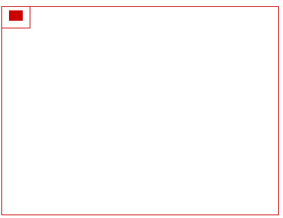
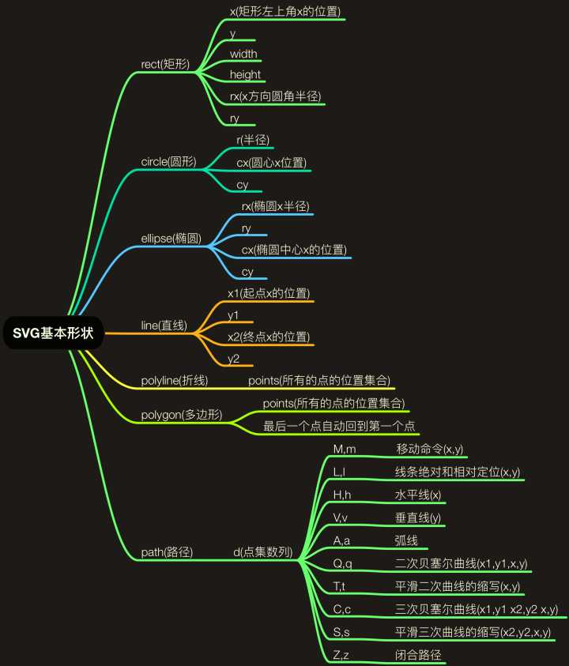
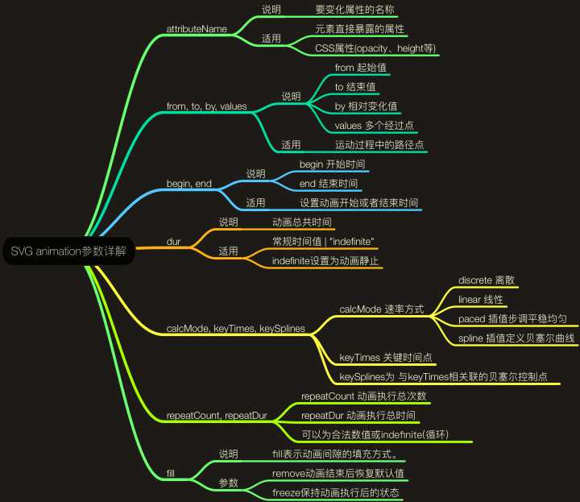

本文不能让你成为 SVG 大神，但是能让你知道、了解他「揭开神秘面纱」
基础认知
SVG「Scalable Vector Graphics」表示「可缩放矢量图形『放大不模糊』」面向未来「W3C 标准」。
基本的 SVG 文档由 <svg> 根元素和 基本形状元素 构成
作为 XML 的一种方言，SVG 必须正确的绑定命名空间（在 xmlns 属性中绑定）。命名空间速成 获取更多信息
SVG 文件全局有效的规则是 「后来居上」，越后面的元素越可见。
能做什么
动画、图形、渐变、旋转、滤镜、JavaScript 接口、各种超酷的动画…
和 HTML 使用的几种方式
<img src="xxx.svg" height="10" width="10" />
不能使用JS来控制
.svg { background-image: url(xxx.svg);}
最好不使用 base64 格式化 SVG「阻塞其它资源」、不能使用 JS 控制
<iframe src="xxx.svg">Not support iframe</iframe>
<embed type="image/svg+xml" src="xxx.svg" />
<object type="image/svg+xml" data="xxx.svg">Not support SVG</object>
能使用JS来控制「推荐方式」
<svg xmlns="http://www.w3.org/2000/svg" viewBox="0 0 10 10">…</svg>
节省 HTTP 请求，能使用 JS 控制，不能被浏览器缓存
坐标系统
看图说话「原点在左上角」：
viewBox
1 | <svg width="400" height="300" viewBox="0,0,40,30" style="border:1px solid #cd0000;"> |
动画理解：

CSS、JS 与 SVG
内敛样式
1 | <svg xmlns="http://www.w3.org/2000/svg" viewBox="0 0 68 65"> |
外链样式
1 |
|
JS 操作 SVG
如果 SVG 代码作为 DOM 在 HTML 内部，可以向平常一样操作 DOM 操作 SVG
如果是使用 <object> 你可以使用 contentDocument 来控制它 SVG
注意
<img>、background-image形式的 SVG 不支持「外链 CSS、JS」- 内敛 CSS 和 JS 最好放在
<![CDATA[与]]>之中
SVG 基础元素
<svg>：SVG 的根元素，可以相互嵌套<g>：将 SVG 中的元素进行分组操作，分组后可以看成一个单独的形状，统一转换<defs>：用于定义在 SVG 中可重用的元素，def 元素不会直接展示出来，可以通过 use 元素来引用<use>：通过它来复用 def 元素，也包括<g>、<symbol>元素，使用<use xlink:href="#id"/>调用<text>：文本节点，可以实现 word 中的那种「艺术字」<image>：在 SVG 中嵌套图片，可以对图片做对应的处理- …
SVG 形状元素
来张图压压惊：

<path />
别说话，先举个 🌰 ，一起感受一下 path：点我
基于 path 的不同属性，可以画出各种各样的路径，所以 path 可算是 SVG 的「节点之王」
除了 path 之外的节点都「比较普通」，可以看成是对 path 的封装，比如「Rect、Circle…」
命令
命令都用一个关键字母来表示，命令 都有两种 表示方式
- 大写字母，表示采用「绝对定位」
- 小写字母，表示采用「相对定位『相对于上一个点』」
path 的命令列表
document.getElementById(‘path’).getTotalLength()得到路径长度
M：moveto 移动到
L：lineto 画线到；H：horizontal lineto 水平线到；V：vertical lineto 垂直线到
L 命令将会在当前位置和新位置之间画一条线段：L x y (or l dx dy)
还有两个简写命令：H，绘制平行线。V，绘制垂直线。这两个命令都只带一个参数，标明在 x 或 y 轴移动到的位置：H x (or h dx) 、V y (or v dy)
- Z：closepath 关闭路径
Z 命令会从当前点画一条直线到路径的起点，所以它还是经常被放到路径的最后。另外，Z 命令不用区分大小写：Z (or z)
- C：curveto 三次贝塞尔曲线
C x1 y1, x2 y2, x y 或 c dx1 dy1, dx2 dy2, dx dy
(x1, y1)、(x2, y2) 分别是起点、终点控制点。最后一个坐标 (x, y)，表示曲线的终点
三次贝塞尔曲线 表现形式 是：曲线沿着 起点开始 到第一控制点的方向伸出，逐渐弯曲，然后沿着第二控制点到 终点的方向结束
- S：smooth curveto 光滑三次贝塞尔曲线
S 命令可以用来创建与之前那些曲线一样的贝塞尔曲线，通常和 C 命令一起使用
如果 S 命令跟在一个 C 命令或者另一个 S 命令的后面，它的第一个控制点，就会被假设成前一个控制点的对称点，不应该写出来，所以 S 省略了一个对称点
- Q：quadratic Belzier curve 二次贝塞尔曲线
Q x1 y1, x y 或 q dx1 dy1, dx dy
- T：smooth quadratic Belzier curveto 光滑二次贝塞尔曲线
T x y 或 t dx dy
T 命令类似于 S 命令，用于二次贝塞尔曲线。T 命令前面最好是一个 Q 命令，或者是另一个 T 命令
如果 T 单独使用，那么控制点就会被认为和终点是同一个点，所以画出来的将是一条直线
- A：elliptical Arc 椭圆弧
A rx ry x-axis-rotation large-arc-flag sweep-flag x y 或 a rx ry x-axis-rotation large-arc-flag sweep-flag dx dy
rx ry：「椭圆」的 x，y半径
x-axis-rotation：X 轴旋转角度，顺时针为正数
large-arc-flag：1 表示用大弧度，0 表示小弧度
sweep-flag：弧度回话方向，1 顺时针，0 逆时针
x y：弧度终点
元素与样式
- stroke
- fill
- transform
- linearGradient
- mask
- filter
- clipPath
一些 Demo：
svg 模糊 demo
symbol demo
symbol-use-demo
text mask demo
mask demo
clip demo
SVG 文字路径动画
linearGradient Demo
使用 CSS 请注意
把 background-color、border 改成 fill 和 stroke
上色和填充的部分一般是可以用 CSS 来设置的，比如 fill，stroke，stroke-dasharray，但不包括渐变和图案等。
另外，width、height，以及路径的命令等等，都不能用 css 设置
不是所有的属性都能用 CSS 来设置：SVG 规范 将属性区分成 properties 和 attributes，前者是可以用 CSS 设置的，后者不能
SVG 动画
SVG 动画 集合
SVG 的动画元素是和 SMIL Synchronized Multimedia Integration Language开发组合作开发的。
SMIL 开发组和 SVG 开发组合作开发了 SMIL 动画规范，在规范中制定了一个基本的 XML 动画特征集合。
SVG 吸收了 SMIL 动画规范当中的动画优点，并提供了一些SVG继承实现。
大概三种实现方式：
- JS 动画「DOM 操作『忽视它』」
- CSS3 动画「animation、transition『不是 svg 的重点』」
- SVG 本身的动画「基于 SMIL」「主要借助 SVG
animate相关标签」

set
set 表示此元素没有动画效果 😨😨😨。
好吧：这样的，虽然 set 虽然不能触发连续的动画，但是，其还是可以实现基本的延迟功能。
就是指：可以在特定时间之后修改某个属性值「也可以是 CSS 属性值」。
animate
SVG animation 最强大的地方在于：「只要在页面放几个 animate 元素，没有任何 CSS, 没有任何JS」
1 | <animate |
animateColor
一看就知道是颜色动画。不过，animate 可以实现其功能与效果，因此，此属性已经被废弃。
可谓因为兄弟相争而年少陨落的天王。逝者已矣，过去的就让它过去吧 1
2
3
4
5
6
7
8
9
10
11
12
13
14
15
16
17
18
19
20
### animateTransform
```xml
<animateTransform
attributeName="transform"
attributeType="XML"
type="rotate"
from="0 125 135"
to="360 125 135"
begin="0s"
dur="10s"
repeatCount="indefinite">
</animateTransform>
```
[一个 Demo](https://jsfiddle.net/hangyangws/zqLorfo9/1/)
### animateMotion
animateMotion 元素可以让 SVG 各种图形沿着特定的 path 路径运动
1 | <animateMotion |
例子分析
组合：
一个 Demo
end 事件：
一个 Demo
click 事件：
一个 Demo
进阶阅读推荐
工具推荐
- svgo
项目地址：点我查看
比较厉害的压缩优化 SVG 的工具，可以将 SVG 中的无用信息删掉，同时支持代码进行压缩
- SVGOMG
展示地址：SVGOMG - SVGO’s Missing GUI
SVGOMG 是 svgo 的可视化界面工具，操作起来很方便，还提供了一些其他有用的功能
- Snap.svg
项目地址：Snap.svg - Home
Snap.svg 是一个可以使你操纵 SVG 资源和 jQuery 操作 DOM 一样简单的类库，
可以写出更加复杂的 SVG 效果，同时文档超级齐全，推荐给想深入了解的同学。